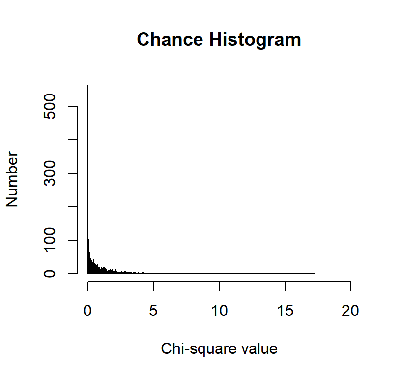
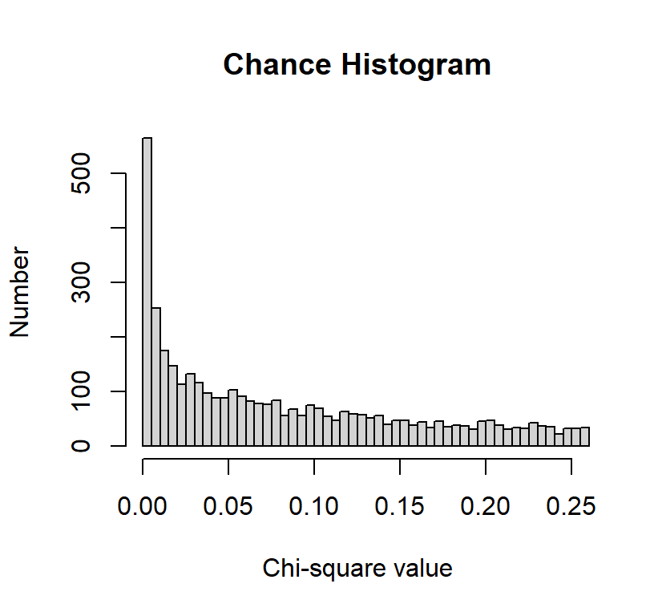
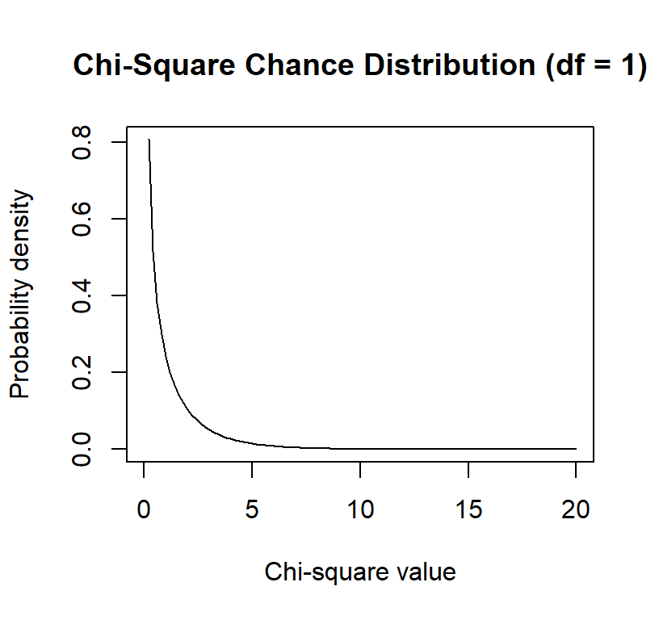
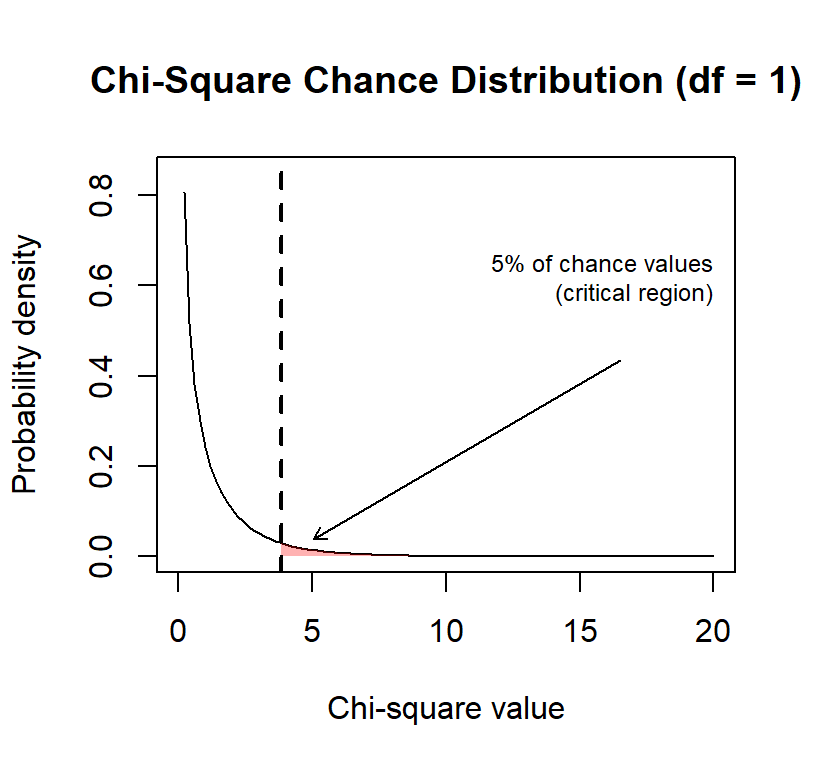
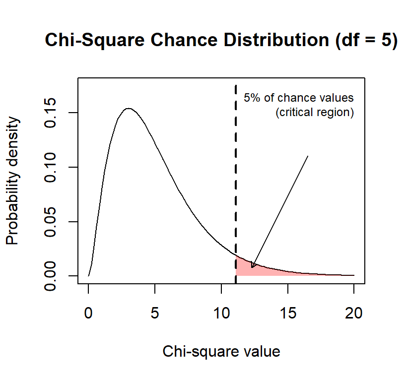
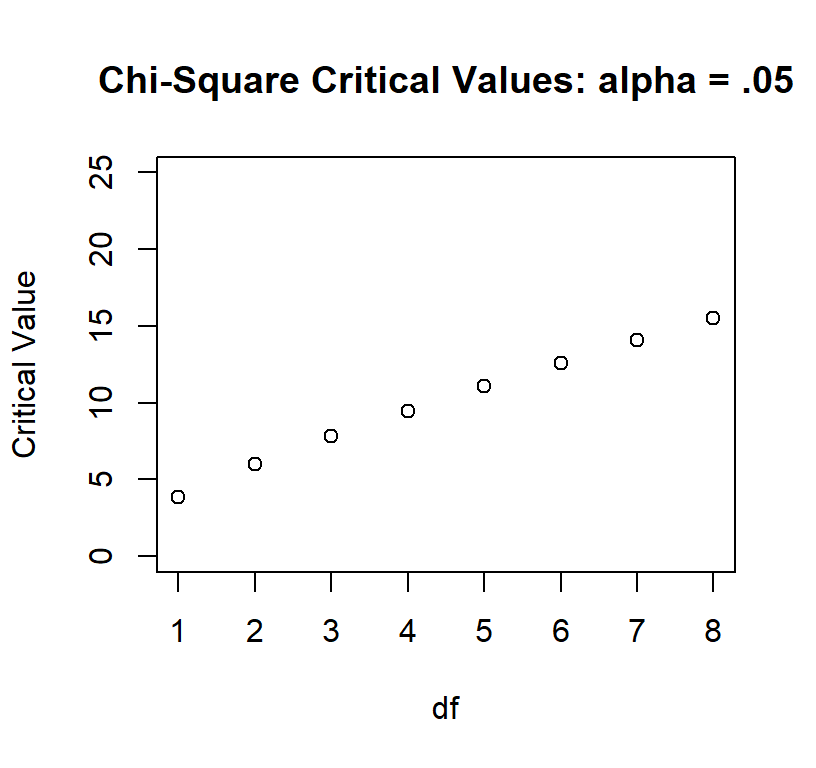

34 Pearson’s Chi-Square
34.1 Here is a real result, and it is two numbers.
Best (1979) watched 261 introductory psychology students take a multiple-choice exam and counted what happened every time somebody changed an answer. 27 changes went from right to wrong. 195 went from wrong to right.
Do the observed counts differ from the counts we would expect by chance?
Categorical outcomes are everywhere in psychology. Did the participant comply or not, did the patient relapse or not, which of four options did they choose, did the answer change help or hurt. Whenever your outcome is a category instead of a quantity, this is the chapter you need. It is also the chapter where you get to watch a chance distribution get built from scratch, ten thousand fake students at a time, instead of being handed one and told to trust it.
34.2 Parametric vs. Non-Parametric
Statistical tests are often divided into parametric and nonparametric families. The difference concerns what the model assumes and what part of the data it compares.
34.2.1 Parametric Tests (everything up to this point)
Parametric tests describe populations with parameters such as means and variances. Particular tests make particular distributional and error assumptions; they do not all demand that the raw scores themselves be perfectly normal. They are powerful when their assumptions are reasonable.
You already know the ingredients, and by now you know the tests: the mean and SD from Part 1 are what every t-test, F-test, and regression you have run since then is built out of. That is the family we just watched fail on two counts.
34.2.2 Nonparametric Tests (this chapter and the next)
Nonparametric tests make fewer or different distributional assumptions and often ask questions about counts, signs, or ranks:
- They usually do not require normally distributed raw scores
- Work with ordinal or nominal data
- Also useful when parametric assumptions are violated
- Instead of means, they compare counts/frequencies or rank observations
They are not assumption-free. Independence, sampling, measurement, and the design still matter. The next chapter examines that entire nonparametric family in more detail.
34.2.3 Chi-Square
Pearson’s chi-square is often placed under the “nonparametric” umbrella because it does not model means with a normal error distribution. More precisely, it is a test for categorical counts. It is not the emergency version of a t-test to use whenever normality looks annoyed.
Rather than asking: “How far is this group mean from another group mean?”
Chi-square asks: “Do the observed counts differ from what we would expect by chance?”
In technical terms, chi-square hypothesis testing asks whether an observed pattern is consistent with a chance-based null hypothesis.
- We compare observed data to expected values under null hypothesis (\(H_0\)), which means we expect no difference from chance.
- Large discrepancies lead us to reject \(H_0\) and provide support for the alternative hypothesis (\(H_1\)).
Note: You already know this logic from the t-test chapters. Chi-square runs the same play with counts instead of means.
Chi-square is especially useful when:
- Outcomes are categories (yes/no, group A/B/C, correct/incorrect)
- Means and standard deviations either don’t exist or don’t make sense
There are two types of chi-square:
- One-Way Pearson’s Chi-Square [Goodness of Fit]
- Two-Way Pearson’s Chi-Square [Test of Independence]
34.3 One-Way Pearson’s Chi-Square [Goodness of Fit]
Back to the two numbers from the start of the chapter, this time with the right tool. You have been told: “Stay with your first answer on a multiple-choice test.” So is changing answers more likely to be harmful?
Best studied the responses of 261 students in an introductory psychology course (Best 1979). He recorded the number of right-to-wrong (27), wrong-to-right (195), and wrong-to-wrong (39) answer changes for each student. Note: We will ignore wrong-to-wrong as he did in his first analysis.
| Frequency | Right-to-Wrong | Wrong-to-Right |
|---|---|---|
| Observed | 27 | 195 |
Total of 222 observations
We will use the One-Way Chi-Squared [Goodness of fit]. It asks whether the relative frequencies observed in the categories of a sample frequency distribution are in agreement with the relative frequencies hypothesized to be true in the population.
34.3.1 Hypothesis for Goodness of fit
There are two versions (but it does not change the math, just how you talk about it):
- No preference: there will be no preference between different categories (e.g., do people prefer Coke or Pepsi)
- No difference from a known population: This type hypothesis compares two populations (or representative samples)
If people were making chance guesses from a population of people who don’t have any knowledge about material on the test (version 2 of the hypothesis):
- \(H_0: P_{right-to-wrong} = .5, P_{wrong-to-right} = .5\)
- \(H_1: H_0\) is False
Note: The probability you set can be whatever you want, but across all cells, they must add to 1. When you do not know what probability should be from a theoretical standpoint, you can simply do 1/Number of cells.
34.3.2 Find Expected Frequencies
If we expect by chance people would have gotten p = .50 on wrong-to-right and right to wrong, \(f_e = pn\)
\(F_{e_{right-to-wrong}}= .5*222=111\) \(F_{e_{wrong-to-right}}= .5*222=111\)
| Frequency | Right-to-Wrong | Wrong-to-Right |
|---|---|---|
| Observed | 27 | 195 |
| Expected | 111 | 111 |
Note: These tables are often shown in papers (sometimes as proportions).
34.3.3 Goodness of Fit Calculation by Hand
\[\chi^2 = \sum \frac{(f_o-f_e)^2}{f_e}\]
\(\chi^2 = \frac{(27-111)^2}{111}+\frac{(195-111)^2}{111}\) = 127.14
Note: Never enter proportions into the chi-square. You must work with frequencies.
One thing to notice before we go on. The expected frequency here is 111, which is exactly the mean the t-test printed at the top of the chapter. The t-test found the right number. It just had no idea what the number was for: it treated 111 as the center of the data, when 111 is the thing the data are supposed to be compared against.
34.3.4 Test Against Chance Distribution
\(\chi^2\) values close to zero are probably “chance,” and values that are larger are farther from chance. Wait. How do I know that?
Look at our \(f_o\) values. If the \(f_o\) values were close to the \(f_e\) values, then the total value we calculate would be very close to zero.
For example, if we actually found this pattern instead:
| Frequency | Right-to-Wrong | Wrong-to-Right |
|---|---|---|
| Observed | 111 | 111 |
| Expected | 111 | 111 |
\(\chi^2 = \frac{(111-111)^2}{111}+\frac{(111-111)^2}{111} = 0\)
While it’s very rare for the observed frequencies to be exactly what we expect by chance, it’s often really close to zero.
To get a sense of how often it would be close to zero, imagine we created a new test and the multiple-choice question said:
“Please select an answer, then erase it and select something else. There is one right answer.”
That’s all you get. No actual knowledge is being tested. It’s a pure game of chance! In other words, people are totally guessing and are forced to change their answer.
Sometimes, purely by chance, they will go from Right-to-Wrong or Wrong-to-Right (and we will ignore all the Wrong-to-Wrong cases). What would that look like?
I can run 10,000 subjects to get a sense of what that might look like.
It looks like we get zero and values close to zero a lot, but also, purely by chance, we can get values all the way out to about 17.25. So even by chance, we can get a value that’s “far” from zero.
But does that happen often?
Before we answer that question, let’s zoom in closer to zero so we can see what’s going on more clearly.

So how far from zero is still “chance”?
To answer that question, we would need more than 10,000 people. In fact, we would need the entire population. That would be impossible, but luckily, someone has done the math-magic to figure out what that would look like:

Earlier, we looked at frequencies: how often different chi-square values occurred in a simulation.
Here, we switch to a probability density, which describes how likely different chi-square values are under the null hypothesis.
- The x-axis shows possible chi-square values.
- The y-axis shows relative likelihood (how often it will occur), not counts.
The important idea is that:
- Values near zero are very likely under chance
- Larger values are increasingly unlikely under chance
The total area under the curve equals 1, representing all possible outcomes under the null hypothesis.
34.3.5 How do we set chance?
How extreme does a chi-square value need to be before we stop believing it’s just chance?
One very common rule is the 95% / 5% rule.
We say: “If the null hypothesis is true, then 95% of the time our chi-square values should fall below some cutoff.”
That cutoff defines the critical value. Any value beyond that point is rare enough that we start to doubt the chance explanation.
This does not mean:
- That chance is impossible past that value
- Or that we are 100% certain the result is “real”
It means:
- About 5% of the time, even when the null hypothesis is true, we will still see values this extreme by chance alone
- We accept that risk in exchange for having a decision rule
So when we say a result is “unlikely due to chance,” what we really mean is:
“If this were just chance, we would expect to see something this extreme only about 5% of the time.”

The distribution changes as a function of the degrees of freedom [\(df\) is the number of cells - 1]. Degrees of freedom tell us how much independent information is available to estimate variability in the data. If we have a different number of conditions, we have a different distribution to compare it to.
We get the crit = 3.84. Any \(\chi^2\) we calculate above that value means it has only a 5% probability of being a chance result.
34.3.6 Our results?
We ask where is our chi-square value relative to this chance distribution given our \(df = 1\). We calculated 127.14, and that is in the tail (the small part, well above chance value). We can use R or a table from a book to get the critical values for alpha (p) =.05. We don’t need to make the graph every time as someone did this already using calculus and has given us all the values with a simple function in R called qchisq.
This function answers the question:
“What chi-square value cuts off a certain percentage of chance outcomes?”
p = .05
We are defining the 5% region, the part of the distribution that happens only about 5% of the time under chance.
df = 1- This tells R which chi-square distribution to use.
- With two categories, the degrees of freedom is 1.
- This tells R which chi-square distribution to use.
lower.tail = FALSE
- This is important:
- FALSE means we want the upper tail of the distribution
- This is important:
We get the crit = 3.84 < 127.14 (experimental value we got), so we reject the null hypothesis (\(H_0\)) and provide evidence for the alternative (\(H_1\)).
34.3.7 Report in APA
\(\chi^2(df, N) = X.XX\), \(p = .XXX\)
Since our p-value was below .05, we rejected the null. Report the exact p-value to two or three decimals, and only fall back on \(p < .001\) when it is smaller than that. Ours is far smaller than that.
Students were significantly more likely to change an answer from wrong to right (87.84%) than from right to wrong (12.16%), \(\chi^2(1, N = 222) =\) 127.14, \(p < .001\).
34.3.8 Impact of higher DF
Note: shape of chance distribution changes as we have more df (say 6 cells to compare)

As you can see the distribution gets more spread out. So with larger DF our critical value increases
ChiCrit<-qchisq(.05, 1:8, lower.tail = FALSE)
plot(ChiCrit, main="Chi-Square Critical Values: alpha = .05",
xlab="df", ylab="Critical Value", xlim=c(1,8), ylim=c(0,25))
34.3.9 Goodness of Fit Calculation by Code
The way above is the hard way, and it shows you understand what the computer is doing. Doing one-way chi-squares in R is really easy!
34.3.10 Step 1: Build your Table
MCQ.Study <- as.table(rbind(c(27, 195)))
dimnames(MCQ.Study) <- list(Freq = c("Observed"),
Action = c("RtoW", "WtoR"))
MCQ.Study Action
Freq RtoW WtoR
Observed 27 19534.3.11 Step 2: Calculate Chi-Square
MCQ.chi <- chisq.test(MCQ.Study, p=c(.5, .5))
MCQ.chi
Chi-squared test for given probabilities
data: MCQ.Study
X-squared = 127.14, df = 1, p-value < 2.2e-16R prints the same 127.14 we ground out by hand, which is the point of doing it by hand once.
Again, in APA format, we would say,
Students were significantly more likely to change an answer from wrong to right (87.84%) than from right to wrong (12.16%), \(\chi^2(1, N = 222) =\) 127.14, \(p < .001\).
34.4 Two-Way Pearson’s Chi-Square [Test of Independence]
“Maybe we should only change our answers on easy items, but on hard items, we should trust ourselves.”
Best (1979) also examined the 1670 total number of responses across the 261 students and divided the items into easy/difficult in an introductory psychology course. He recorded the number of right-to-wrong, wrong-to-right, and wrong-to-wrong (39) answer changes for each student. Again we will ignore wrong-to-wrong (17% of the responses) for simplicity.
| Frequency | Right to Wrong | Wrong to Right |
|---|---|---|
| Easy | 97 | 411 |
| Difficult | 251 | 620 |
We need to do a Two-Way Chi-Square [Test of Independence]. It asks whether observed frequencies reflect the independence of two qualitative variables. Compares the actual observed frequencies of some phenomenon (in our sample) with the frequencies we would expect if there were no relationship at all between the two variables in the larger (sampled) population. We ask if the two variables are independent: knowledge of the value of one variable provides no information about the value of another variable.
34.4.1 Hypothesis for Test of Independence
The null hypothesis is that for each, the value obtained for one variable is not related to or influenced by the second variable. This idea can be expressed in two versions:
- Version 1: A single sample is measured on two separate variables. For example, knowing your personality will help predict your color preference (alternative). Knowing your personality will NOT help you predict your color preference (null) [Personality and color preference are measured per person]
- Null: The variables are not related.
- Alternative: The variables are related.
- Version 2: Two (or more) samples are measured and compared to see if there are differences. For example, the same proportions of extroverts (group 1) and introverts (group 2) prefer the same color (null). If the proportions are different for the two groups, then you have the alternative hypothesis
- Null: The samples are independent
- Alternative: The samples are not independent
Here we are working with Version 1 (one group taking two types of items)
34.4.2 Null Hypothesis (\(H_0\))
- Answer-changing behavior is independent of item difficulty.
- The proportion of right-to-wrong and wrong-to-right changes is the same for easy and difficult items
Knowing whether an item is easy or difficult provides no information about how answers are changed
34.4.3 Alternative Hypothesis (\(H_1\))
Answer-changing behavior depends on item difficulty.
Students are more likely to benefit from changing answers on easy items
On difficult items, answer changes are less likely to improve performance
Knowing whether an item is easy or difficult does provide information about how answers are changed
Simply put:
- \(H_0:\) The item difficulty is not related to how a person changes their answer
- \(H_1:\) The item difficulty is related to how a person changes their answer
34.4.4 Find Expected Frequencies
This is a little more complex than the goodness of fit test
34.4.5 Find row/col sums
| Frequency | Right to Wrong | Wrong to Right | Sum |
|---|---|---|---|
| Easy | 97 | 411 | 508 |
| Difficult | 251 | 620 | 871 |
| Sum | 348 | 1031 | 1379 |
34.4.6 Step 2: Expected frequencies per cell
\[f_e = \frac{col\,total*row\,total}{overall\,total}\]
| Frequency | Right to Wrong | Wrong to Right | Sum |
|---|---|---|---|
| Easy | 97 (128.1972) | 411 (379.8028) | 508 |
| Difficult | 251 (219.8028) | 620 (651.1972) | 871 |
| Sum | 348 | 1031 | 1379 |
34.4.7 Test of Independence Calculation by Hand
\[\chi^2 = \sum \frac{(f_o-f_e)^2}{f_e}\]
\(\chi^2 = \frac{(97-128.1972)^2}{128.1972} + \frac{(411-379.8028)^2}{379.8028} +\frac{(251-219.8028)^2}{219.8028}+\frac{(620-651.1972)^2}{651.1972}\)
\(\chi^2 =\) 16.08
34.4.8 Test Against Distribution
\(df = (Row-1)(Col-1)\) \(df = (2-1)(2-1) = 1\)
Given our \(df = 1\). We calculated 16.08 we can use R or a table to get the critical values for alpha = .05
We get the crit = 3.84 < 16.08, so we reject the null.
34.4.9 Report in APA
\(\chi^2(df, N) = X.XX\), \(p = .XXX\), \(V = .XX\)
In APA format:
Item difficulty was related to how students changed their answers, \(\chi^2(1, N = 1379) =\) 16.08, \(p < .001\).
One flag before you meet the code. That hand calculation used no continuity correction, and R’s default for a \(2 \times 2\) table does. So the output a few sections down will print a slightly smaller number than this one. Nothing is broken; we sort it out when it happens.
[That is all we can say statistically. Normally people present a table in percentages to unpack this result, but You have to decide if you want to do row or column percentages. People do not present both]. I think the row percent make more sense in this case we want to compare across item difficulty.
| % Row | Right to Wrong | Wrong to Right | % |
|---|---|---|---|
| Easy | 19.1% | 80.9% | 100% |
| Difficult | 28.8% | 71.2% | 100% |
| Col Total | 25.2% | 74.8% | 100% |
34.4.10 Test of Independence Calculation by Code
Again the code for R is very easy, so I will show you how it works:
34.4.11 Step 1: Build Your table
MCQ.Study.2 <- as.table(rbind(c(97, 411), c(251, 620)))
dimnames(MCQ.Study.2) <- list(Difficulty = c("Easy","Diff"),
Change = c("RtoW", "WtoR"))
MCQ.Study.2 Change
Difficulty RtoW WtoR
Easy 97 411
Diff 251 62034.4.12 Step 2: Calculate Chi-Square
In tests of independence, R calculates the expected frequencies for you. For a \(2 \times 2\) table, chisq.test() applies Yates’s continuity correction by default when correct = TRUE. The correction tries to improve a continuous chi-square approximation to discrete counts, but it can be overly conservative. It is not a ritual that must always be performed. Use it deliberately, report whether you used it, and consider Fisher’s exact test when expected counts are sparse.
\[\chi^2_{Yates} = \sum \frac{(|f_o-f_e| - .5)^2}{f_e}\]
Note: You can view the observed and expected frequencies. For larger sparse tables, chisq.test(..., simulate.p.value = TRUE) can estimate a p-value by simulation.
MCQ.chi.2 <- chisq.test(MCQ.Study.2,correct = TRUE)
MCQ.chi.2
Pearson's Chi-squared test with Yates' continuity correction
data: MCQ.Study.2
X-squared = 15.566, df = 1, p-value = 7.968e-05There is the mismatch we promised. R printed 15.57; we calculated 16.08 by hand. That gap is Yates, and it is the entire gap. Turn the correction off and R lands right back on the hand calculation:
chisq.test(MCQ.Study.2, correct = FALSE)
Pearson's Chi-squared test
data: MCQ.Study.2
X-squared = 16.077, df = 1, p-value = 6.082e-05Neither number is the wrong one. They answer the same question with slightly different arithmetic, and both reject the null here. What matters is that you say which one you ran, because a reader cannot tell 15.57 from 16.08 by staring at it.
34.4.13 Row Proportion Code
prop.table(MCQ.Study.2,1) Change
Difficulty RtoW WtoR
Easy 0.1909449 0.8090551
Diff 0.2881745 0.711825534.4.14 Col Proportion Code
prop.table(MCQ.Study.2,2) Change
Difficulty RtoW WtoR
Easy 0.2787356 0.3986421
Diff 0.7212644 0.601357934.4.15 Effect Size: Because an Asterisk Is Not a Personality
The chi-square test tells us whether the observed table is difficult to explain under the null hypothesis. It does not tell us whether the association is large enough to matter. With enough observations, a microscopic association can earn an asterisk and begin acting important at faculty meetings.
For a \(2 \times 2\) table, phi (\(\phi\)) is:
\[ \phi = \sqrt{\frac{\chi^2}{N}} \]
For a table of any size, use Cramer’s V:
\[ V = \sqrt{\frac{\chi^2}{N\min(r-1,c-1)}} \]
Here, \(r\) and \(c\) are the numbers of rows and columns. Cramer’s V ranges from 0, meaning no association, to 1, meaning perfect association. Do not automatically translate .10, .30, and .50 into small, medium, and large without thinking about the design and research area. Those labels are rough landmarks, not sacred commandments delivered on stone tablets by Cohen.
chi_uncorrected <- chisq.test(MCQ.Study.2, correct = FALSE)
n_total <- sum(MCQ.Study.2)
phi <- sqrt(as.numeric(chi_uncorrected$statistic) / n_total)
cramers_v <- sqrt(
as.numeric(chi_uncorrected$statistic) /
(n_total * min(dim(MCQ.Study.2) - 1))
)
c(phi = phi, cramers_v = cramers_v) phi cramers_v
0.1079744 0.1079744 For these data, \(V = .11\): there is an association, but it is not a gigantic one. The asterisk has not transformed into a flaming sword.
34.4.16 Odds Ratios for a 2-by-2 Table
An odds ratio compares the odds of an outcome between two groups. In our table, the odds of changing an easy item from right to wrong rather than wrong to right are \(97/411\). For difficult items, those odds are \(251/620\).
\[ OR = \frac{97/411}{251/620} = 0.58 \]
An odds ratio of 1 would mean equal odds. Here, the odds of a right-to-wrong rather than wrong-to-right change were about 42% lower for easy items than for difficult items. If you reverse the comparison, the odds for difficult items are about \(1/0.58 = 1.71\) times those for easy items. Odds ratios are direction-sensitive little creatures, so always say which group and outcome are in the numerator.
Base R gives us the odds ratio and its confidence interval with Fisher’s exact test:
fisher_result <- fisher.test(MCQ.Study.2)
fisher_result$estimate
fisher_result$conf.intodds ratio
0.5831962
[1] 0.4421001 0.7654197
attr(,"conf.level")
[1] 0.95The estimated odds ratio is 0.58, 95% CI [0.44, 0.77].
34.4.17 Power for Chi-Square
Power asks how often a study would detect an association of a specified size if that association really exists. Small samples give fickle chance more room to cause trouble. A weak association plus twelve people and one undergraduate who clicked every response while watching TikTok is not a sturdy research program.
For chi-square tests, Cohen’s \(w\) is commonly used in power calculations. In a \(2 \times 2\) table it is equivalent to phi and Cramer’s V. The function below uses only base R. It finds the total sample size needed for 80% power when \(w = .1062\), approximately the association observed here.
chisq_power <- function(n, w, df, alpha = .05) {
critical_value <- qchisq(1 - alpha, df = df)
1 - pchisq(critical_value, df = df, ncp = n * w^2)
}
required_n <- uniroot(
function(n) chisq_power(n, w = .1062, df = 1) - .80,
interval = c(2, 10000)
)$root
ceiling(required_n)[1] 696The answer is about 696 total observations. That number is not permission to choose an effect size after seeing the results. Plan power using the smallest effect worth detecting, prior evidence, or a defensible range of possible effects.
34.4.18 Reporting the Result
A compact report can include the test, effect size, and a table of interpretable percentages:
Item difficulty was associated with answer-change direction, \(\chi^2(1, N = 1379) =\) 15.57, \(p < .001\), \(V = .11\). Compared with difficult items, easy items had lower odds of being changed from right to wrong rather than wrong to right, \(OR = 0.58\), 95% CI [0.44, 0.77].
The chi-square value above uses Yates’s correction, matching the test already run in this chapter. The effect-size calculation uses the ordinary Pearson chi-square. State your choices so readers do not have to conduct forensic accounting on your results section.
34.4.19 Which Cells Are Doing the Work?
A significant chi-square says the table as a whole is hard to explain under the null. It does not say which part of the table caused the trouble. The fitted object already knows, and you do not have to compute anything: chisq.test() stores the standardized residuals.
MCQ.chi.2$stdres Change
Difficulty RtoW WtoR
Easy -4.009616 4.009616
Diff 4.009616 -4.009616Read those like z-scores, one per cell. Each is the gap between observed and expected divided by its own standard error, so anything past about \(\pm 2\) is a cell pulling real weight. The sign tells you the direction: positive means more cases landed there than chance predicted, negative means fewer. Easy items came up short on right-to-wrong changes and long on wrong-to-right ones, which is the association the omnibus test detected, now with an address.
All four values here are the same size because a \(2 \times 2\) table has one degree of freedom: the four cells are one fact told four times. Residuals earn their keep on bigger tables, where a significant omnibus test can be hiding behind one rogue cell out of twenty. That is also where you should start counting, because twenty cells inspected is twenty comparisons, and twenty comparisons is a family. See Multiple Comparisons.
34.4.20 Chi-Square Issues
- Chi-square works with counts, not percentages, means, or the emotional intensity with which you typed the numbers.
- The observations must be independent. One person should not quietly appear in several cells unless the design and model explicitly handle repeated observations.
- The approximation becomes unreliable when expected counts are very small. A common guideline is that no expected count should be below 1 and no more than 20% should be below 5, but this is a guideline rather than a commandment. For a small \(2 \times 2\) table, use Fisher’s exact test. For larger sparse tables, a simulated p-value may be useful.
- Chi-square cannot be negative because every discrepancy is squared. It can equal zero when every observed count equals its expected count, an event normally witnessed immediately before the Probability Gods demand another sacrifice.
- A cell contributes more when its observed and expected counts differ by a large amount relative to the expected count.
- A significant omnibus test says that some association exists. It does not identify every cell responsible for it. Standardized residuals are the first place to look, and follow-up comparisons then create a multiple-testing problem, which is what Multiple Comparisons was for, before the asterisks multiply and form a union.
ImportantCounts First; Interpretation Second
A chi-square test asks whether the observed counts differ from the counts expected under the null model. After that test, inspect the percentages, residuals, and effect size to learn where the association lives and whether anybody should care.
Best, John B. 1979. “Item Difficulty and Answer Changing.” Teaching of Psychology 6 (4): 228–30. https://doi.org/10.1207/s15328023top0604_13.